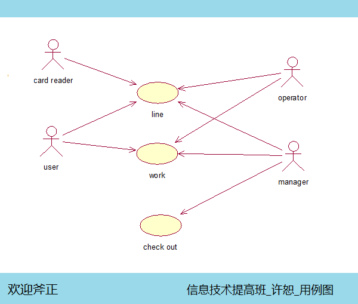
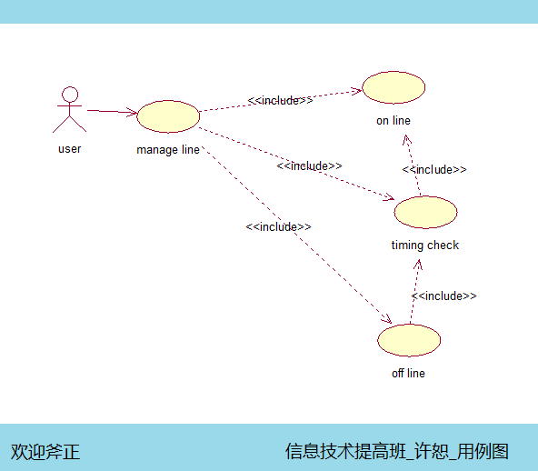

今天总结到了UML的用例图部分！进行了两个星期的视频，终于到了自己动手的时刻，心里其实还是比较没有底的！用例图是什么？给谁看？都有什么作用？这些问题弄得我脑袋有点晕！不过还好，画画思维导图，感觉好多了！
用例图是为了更好地为用户和系统分析人员提供一个大众的，一致性的方法，用途是为了方便用户和系统分析人员的理解尽量一致！也是为了让以后的系统设计人员比较准确地把握系统的需求，能够节省时间，提高效率！
用例图的出现不可能百分之百解决用户和系统分析人员之间的隔阂和矛盾，但是却将系统与需求不合造成的风险降到一个合适的范围 ！
在画图的时候我们更多的时候被关系搞得晕头转向，其实在用例图中，不要太追求关系的准确性，要把握好一个度，原则是用户能看明白，分析人员能理解，容易被下面工作的人员接受，就可以！
还有一点就是不要急于求成，不妨多来几个图说明一个系统，哪怕这个系统一张图能说个大概，分开画，分层画给人得感觉更有行云流水的感觉！
下面是我自己依据机房收费系统画的用例图，请大家斧正：
机房收费系统顶层用例图：

机房收费系统上下机用例图：
